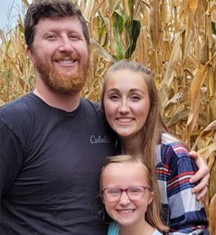
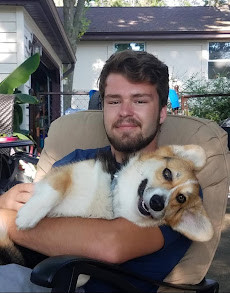

Amalia's Family Restaurant

"We love Amalia's, it's our go to for weekend breakfast."
If you want amazing fresh, fantastic food served faster than any restaurant around, Amalia's is the place to go. We love the staff, food and great family friendly environment of Amalia's and can't recommend it enough. Josh (my husband) says he gets free chocolate milk for life now!
"Everytime I go into Amalias I feel right at home!"
The food is outstanding and the people that work there are some of the nicest people I know! They always make me feel so welcomed!
"All of the staff are happy and joyful!"
I’ve lived in the oconomowoc area for over 10 years. In said time, I have visited many of the local restaurants. Amalia's Family Restaurant is absolutely my favorite for several reasons. When I enter the restaurant I am always greeted by a smiling face and welcoming attitude. When you come to Amalia's there are 2 things you can always expect. More food than you should eat and extremely fast service. Amalia's cooks are faster than any fast food restaurant in the county! You can't even finish a conversation before your food is brought to you. I would absolutely recommend all of my friends and family to Amalia's.
"I won’t take my business anywhere else."
My girlfriend and I started coming to Amalia’s two years ago and it’s become a weekly ritual. The staff is amazing, food is delicious, and if you save room for dessert, the raspberry muffins are to die for.

"The best food in town."
My son and I have been coming to Amalia's for a few years. The staff and owners have gone above and beyond to help me fill my son’s life with joy. Truly, some of the biggest hearts I've had the pleasure to meet and the chefs carry that into their work. Best food in town, but, you'll come back for the environment.
"The food service is outstanding."
The first time I went to Amalia’s was 9 years ago. I was having breakfast with a friend, who is now my husband. We hung around for hours which was very nice of the owners to let us do. So ever since then, my family and I have been avid visitors at their restaurant. The minute you walk in, you feel welcomed. The staff is friendly. They are always working together to have the floor run smoothly. Once you order, you get your food within 5-10 mins. Sometimes it seems faster than fast food places. On top of that, it tastes amazing! If you are looking for a family friendly restaurant with amazing food, this is the place. I know my family and I will never stop coming to Amalia’s as long as they are open.
"Our favorite family restaurant."
Amalia's in Oconomowoc has been our favorite family restaurant since we moved to the area 14 years ago. The atmosphere is friendly and welcoming, with a wide menu selection that offers something for everyone. My family and I have tried almost everything on the menu and have never been disappointed in the taste, quantity or portion size. Throw in lighting fast service and it's easy to understand why they have many loyal customers.

"Good food, friendly staff."
Always a pleasure to be at Amalias in downtown Oconomowoc. Good food, friendly staff, what more could you want? Definitely a place to stop at, whether visiting or living in Oconomowoc.
"Always worth the hour drive!"
Between the unconventionally pleasant service by hysterically entertaining staff and the scrumptious delicacies they serve that keep me coming back. I cannot think of any other place I am willing to drive over an hour just to have breakfast/lunch/dinner on a regular basis.

"6.2 / 5 stars."
Amalia's family restaurant in my opinion, is one of the staple Ma & Pa restaurants in oconomowoc whose been serving delicious food for over 20 years. I've had the privilege of knowing them not just as a diner, but as a former employee. I can still to this day say that the employees are some of the most hospitable & friendly faces I've come to work with. I'd recommend Amalias to all newcomers, you will not be disappointed!
"By far my favorite restaurant."
It's a tradition for my fiance and I to go to Amalia's every Tuesday when we have the chance. The staff there are absolutely amazing. Amalia and Sam are so kind and we love messing around with them. Manuel is absolutely amazing. We love joking with him and his cooking is AMAZING!
"Amalia's is the best."
Always has amazing food and great service where they treat you like family.
"It's a wonderful place to eat."
I've always had a positive experience. I love the breakfast, I love the atmosphere. They have a very friendly staff and waitresses.